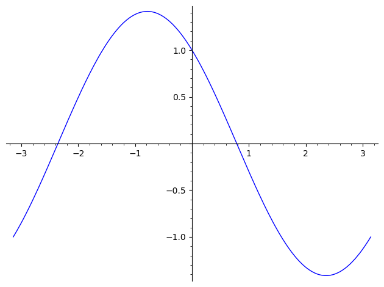

SageMath 代数初步
archive time: 2024-08-31
因为 SageMath 结合了许多工具， 所以计算简单代数还是非常轻松的
在 SageMath 中，如果想使用符号变量，
例如数学上常见的 ，，， 这些，
可以使用 var() 函数定义
x, y, z, u = var("x, y, z, u")
其中 var() 函数接受一个字符串，字符串内是你想要用的符号变量，
可以用空格或者逗号分隔，返回一个符号变量元组，
分别对应你要的那些变量
如果想要查看已经定义了哪些变量，可以使用 vars() 函数
vars()
# => omit
注意：在 SageMath 10.4 和 10.5.beta2 版本中， 第一次使用
vars()会有DeprecationWarning， 这是正常现象
解方程
精确解
如果想要获得一个方程的精确解，可以尝试使用 solve() 函数
x = var("x")
solve(x^2 + 3*x + 2 == 0, x)
# => [x == -2, x == -1]
solve() 函数的第一个参数是要求解的方程，也可以是一个表达式，
默认求解表达式等于 的解，即 expr == 0
后续参数分别是要求解的符号变量和一些参数，例如 solution_dict：
x = var("x")
solve(x^2 + 3*x + 2, x, solution_dict=True)
# => [{x: -2}, {x: -1}]
得到的解可以是符号表达式：
x, a, b, c = var("x, a, b, c")
solve(a*x^2 + b*x + c == 0, x)
# =>
# [x == -1/2*(b + sqrt(b^2 - 4*a*c))/a,
# x == -1/2*(b - sqrt(b^2 - 4*a*c))/a]
方程组也可以求解：
x, y, p, q = var("x, y, p, q")
eq1 = p + q == 9
eq2 = p * x + q * y == -6
eq3 = p * x^2 + q*y^2 == 24
solve([eq1, eq2, eq3, p == 1], p, q, x, y, solution_dict=True)
# =>
# [{p: 1, q: 8, x: -4/3*sqrt(10) - 2/3, y: 1/6*sqrt(10) - 2/3},
# {p: 1, q: 8, x: 4/3*sqrt(10) - 2/3, y: -1/6*sqrt(10) - 2/3}]
如果想要数值解，可以使用 列表推导式1 来转换：
x, y, p, q = var("x, y, p, q")
eq1 = p + q == 9
eq2 = p * x + q * y == -6
eq3 = p * x^2 + q*y^2 == 24
solns = solve([eq1, eq2, eq3, p == 1], p, q, x, y, solution_dict=True)
[(
s[p].n(digits=8),
s[q].n(digits=8),
s[x].n(digits=8),
s[y].n(digits=8)
) for s in solns]
# =>
# [(1.0000000, 8.0000000, -4.8830369, -0.13962039),
# (1.0000000, 8.0000000, 3.5497035, -1.1937129)]
数值解
在实际情况下，很多方程实际上是很难求得精确解的，甚至没有精确解， 这个情况下我们就需要考虑求解方程的数值解，例如：
t = var("t")
solve(cos(t) == sin(t), t)
# => [sin(t) == cos(t)]
上面这个例子中，t 的精确解就无法很好的求出来，
我们可以看看函数的图像：
plot(cos(t) - sin(t), (t, -pi, pi))

我们发现在 和 这两个区间内是有解的，
所以我们就可以尝试使用 find_root() 函数来求解
t = var("t")
(find_root(cos(t) == sin(t), -3, -1),
find_root(cos(t) == sin(t), 0, 1))
# => (-2.356194490192345, 0.7853981633974483)
只不过要注意，find_root() 只能用于求解一元方程，并且只会返回一个解，
参数分别是 方程，下界，上界 以及其他参数，例如 full_output
微积分
对于函数的微分和积分，SageMath 自然也是不在话下的
一般可以通过 diff() 函数求解函数微分
f(x, y) = x^2 + 17*y^2
(diff(f, x), f.diff(y))
# => ((x, y) |--> 2*x, (x, y) |--> 34*y)
diff() 函数的参数分别是函数本身，要对哪个变量求微分，以及求多少阶微分
t = var("t")
f = cos(t)
diff(f, t, 2)
# => -cos(t)
而积分和定积分都是可以通过 integral() 函数求解：
(integral(x * sin(x^2), x),
integral(x / (x^2 + 1), x, 0, 1))
# => (-1/2*cos(x^2), 1/2*log(2))
对于常见的函数拆分，可以使用 partial_fraction() 函数完成：
(1 / (x^2 - 1)).partial_fraction(x)
# => -1/2/(x + 1) + 1/2/(x - 1)
求解微分方程
微分方程是在实际科学问题中经常需要求解的问题， 但是往往又很难直接求解，所以就出现了很多求解微分方程的方法， 例如 拉普拉斯变换 和 欧拉法求数值解
在 SageMath 中，对于简单的微分方程，可以通过 desolve() 函数求解
t = var("t")
p = function("p")(t)
de = diff(p, t) == (2.35 / 100) * p
desolve(de, [p, t])
# => _C*e^(47/2000*t)
因为 desolve() 默认情况下是 SageMath 调用 Maxima2 来求解的，
可以求解一阶和二阶常微分方程，包括对 初始值问题 和 边界问题 两种方程的求解，
所以输出格式和通常的 SageMath 输出不太一样，一般通过 _C 表示任意常量
对于 初始值 和 边界，可以通过 ics 参数指定，
其中参数的值分别为 [x0, f(x0)]，[x0, f(x0), f'(x0)] 以及 [x0, f(x0), x1, f(x1)] 这三种
我们还可以尝试使用 desolve_laplace() 来使用 拉普拉斯变换 求解：
t = var("t")
p = function("p")(t)
de = diff(p, t) == (2.35 / 100) * p
desolve_laplace(de, [p, t])
# => e^(47/2000*t)*p(0)
类似的 desolve_laplace() 也可以通过 ics 来指定初始条件或者边界，
你也可以通过 laplace() 和 inverse_laplace() 来求解
而欧拉法可以通过 eulers_method 或者 euler_method_2x2 来计算
基于 PARI/GP3，GAP4，以及 Maxima， SageMath 中有许多 正交多项式 以及 特殊函数，例如 贝塞尔函数 等等
x = polygen(QQ, "x")
bessel_I(1, 1).n(digits=32)
# => 0.56515910399248502720769602760986
但是 SageMath 目前只是包装了这些特殊函数的数值计算接口， 对于符号计算，仍然需要直接调用对应的接口，例如 Maxima：
(maxima.eval("f:bessel_y(v, w)"),
maxima.eval("diff(f, w)"))
# =>
# ('bessel_y(v,w)',
# '(bessel_y(v-1,w)-bessel_y(v+1,w))/2')
上述代码展示了通过 maxima 调用 Maxima，先定义了一个函数 f 是 bessel_y(v, w)，
然后在这个函数 f 上对 w 求一阶偏导
有关向量微积分可以参考 这个教程
后记
SageMath 作为一个 CAS，有着很好的符号计算和数值计算能力， 同时配合 Jupyter Notebook 和 Jupyter Lab 有了不错的交互界面， 但是在细节方面，以及可用性上，还是有待打磨
列表推导式.Python Docs [DB/OL].(2024-08-29)[2024-08-31]. https://docs.python.org/zh-cn/3/tutorial/datastructures.html#list-comprehensions
Maxima: v5.47 [CP/OL].(2023-05-31)[2024-08-31].https://maxima.sourceforge.io/zh/index.html
Pari/GP: v2.15.5 [CP/OL].(2024-02-11)[2024-08-31].https://pari.math.u-bordeaux.fr
GAP: v4.13.1 [CP/OL].(2024-06-11)[2024-08-31].https://www.gap-system.org